A Persian-speaking therapist or doctor, from your phone. Wherever you live.
Text, voice and video sessions in Farsi or English, licensed clinicians, a free intro session before anyone commits. iOS and Android. Built for Iranians and Persian speakers outside Iran, in Canada, the US and beyond, which is exactly who listens to Radio Javan.
Radio Javan is where Persian speakers abroad spend their listening hours: the commute, the kitchen, the gym, the mehmooni. Care in Farsi belongs in that same hour.
The door is already open.
Your free intro session is the perfect ask for a 30-second audio ad and a home-screen card: no price, no risk, one tap.
Canada and the US, city by city.
Toronto, Vancouver and Montreal alongside Los Angeles, Washington, New York and Texas. Each market gets its own ad set and its own read, so the budget follows what works.
THE ONLY PLATFORM THAT DOES THIS
Persian speakers outside Iran, at global scale, from one dashboard.
Meta and Google reach people. Radio Javan reaches Persian speakers, in Farsi, inside the app they open every day, and lets you pick the country and the city. No other medium gathers this audience in one place: since 2004, the #1 Persian music app, 100+ cities in one campaign.
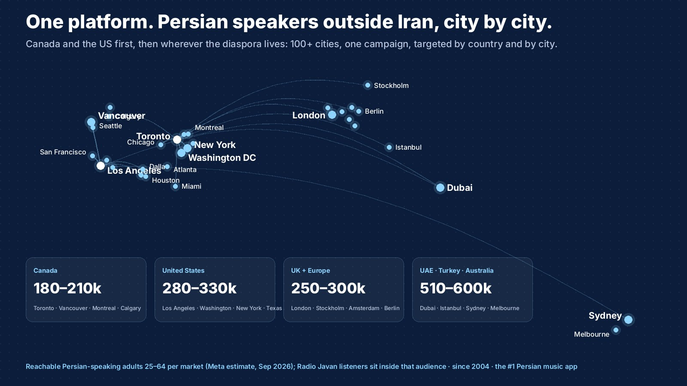
Your top target markets
TIDOS is not limited to one city. Your clinicians consult online, so every market below is open to you. Numbers are Persian-speaking adults 25 to 64 reachable through Meta (September 2026 estimate); Radio Javan's listeners sit inside that audience, city by city.
HOME MARKETCanada
180–210k
Toronto, Vancouver, Montreal, Calgary, Ottawa. Newcomers and settled families alike, Farsi at home and English at work. Long public waits for therapy make an online Farsi clinician an easy yes.
LARGEST DIASPORAUnited States
280–330k
Los Angeles 55–65k, the largest Persian community outside Iran. Washington DC 47–55k. Houston, Dallas and Austin 33–39k. Then New York, San Francisco, Seattle, Chicago, Atlanta, Miami.
NEXTUnited Kingdom and Europe
250–300k
London and Manchester 138–162k, Sweden 63–74k, the Netherlands 55–65k. Same need, same language, one time zone closer to your clinicians.
ALSO OPENUAE, Turkey, Australia
510–600k
Dubai 154–181k, Turkey 266–313k, Sydney and Melbourne 91–107k. Large Persian populations, and for many of them, no Farsi-speaking care nearby at all.
Recommendation: Canada and the US together from month one, since that is where TIDOS is licensed to promote and where the diaspora is largest. Europe, the UAE and Australia switch on in the same account whenever you say so; the audio ad and the boards work as they are.
Radio Javan, in brief
The music, the videos and the podcasts Persians grew up with, and the app they open every day, in Toronto as much as in Los Angeles and Tehran. For an advertiser it is one thing above all: a Persian-speaking audience already gathered, listening with the sound on.
Since 2004, the #1 Persian music app.
750,000 Iranian Americans and the Persian communities of 100+ cities, reached city by city, in the same campaign: Toronto, Vancouver, Montreal, Los Angeles, New York, Washington, Texas, London, Dubai.
Three places, one upload.
Audio between the songs, 30 seconds in Farsi with a Persian voice. Full Screen when the app opens. Home Feed, a native card on the home screen with your button. The city, the budget and the dates are yours to set.
Built for Persian speakers, and only them.
Target by country and by city. Persian-native voices and music. An audio ad written and voiced in minutes, heard before you pay. A brand Persians have trusted for a generation, which is what a therapy app needs most.
How it is measured.
Ads Manager shows plays, completions, taps and reach for every ad. For TIDOS we add the two numbers that matter: free intro sessions booked and app installs, by city and by placement, compared week to week.
What Gina does each week.
Reads the numbers, moves budget to the city and the creative that win, refreshes the board that tired, and writes you one short note. No dashboards to learn.
What you do.
Approve the creatives, keep the free intro session open, tell us what your clinicians hear from the new callers. That is the whole job on your side.
Why we think TIDOS is a winner
We looked before we wrote this page. The demand is real, the product fits it, and the audience is already gathered.
The need is structural, not seasonal. An estimated four million Persian speakers live outside Iran. For most of them, therapy means a second language, a long public wait or a private fee set for locals, and a clinician who has to have the culture explained first. That gap does not close on its own.
TIDOS answers it exactly. Licensed Farsi-speaking psychologists and physicians, text, voice or video, from a phone, with a free intro session before anyone commits. That is the product this audience has been describing to each other for years.
The audience is one place. Radio Javan is where that same diaspora spends its listening hours, in Farsi, with the sound on. A 30-second audio ad reaches them at home, in the car and at the gym, and a home-screen card turns the listen into an install.
It has been proven here before. Persian online counselling has advertised on Radio Javan already: Simia Room ran audio campaigns to the US, Canada and Germany in 2020, and came back for a second round. The demand was there six years ago. The audience has only grown, and the category is still wide open for a brand that owns it.
Your own first ad already ran. The TIDOS account on Ads Manager has one completed audio campaign. Everything on this page builds on that start.
What "winner" means in numbers
Canada and the US together hold 460 to 540 thousand reachable Persian-speaking adults. If one in two hundred of them books a free intro session over a year, that is 2,300 to 2,700 first sessions, before Europe and the UAE are switched on.
The math is yours to check; the audience is ours to deliver.
TIDOS ON RADIO JAVAN · SAMPLE
Your app, in front of the Persian speakers who need it, city by city.
Between the songs and on the home screen, built from your own boards, with the free intro session as the door. Three placements, one upload.
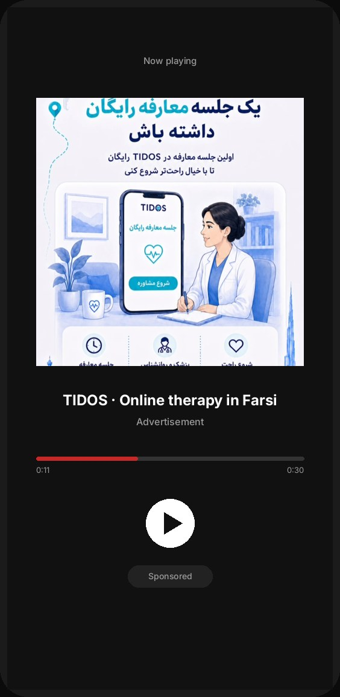
Audio · between the songs
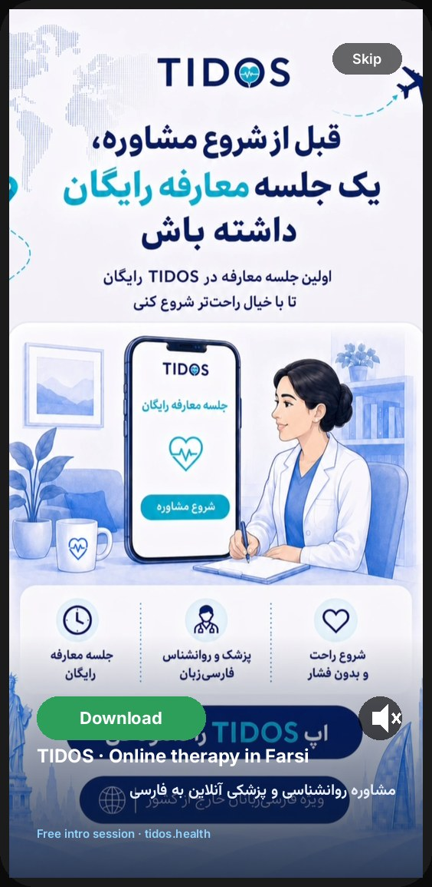
Full Screen · when the app opens
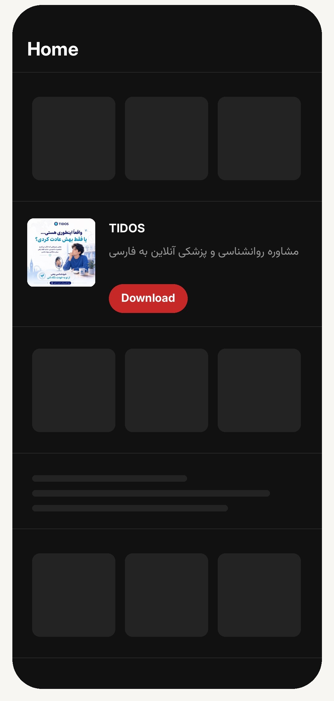
Home Feed · on the home screen
Your 30-second Farsi audio ad Written and voiced for TIDOS, ready to play between the songs.
THE FIRST 30 DAYS
WEEK 1
Canada and the US go live: Toronto, Vancouver, Montreal, Los Angeles, Washington and New York, the audio ad between the songs and the Home Feed card, free intro session as the ask. Installs and taps read daily.
WEEK 2
Full Screen joins in every city. The board that wins on Instagram becomes the Full Screen; the audio gets a second take.
WEEK 3
Texas and the second tier of cities open with what week one taught us. Meta ads start on the same creatives for the people who are not on RJ yet.
WEEK 4
The read: cost per intro session by city, by placement, by creative. The next month's budget follows the winners. A call with Gina.
ALSO FOR INSTAGRAM AND META
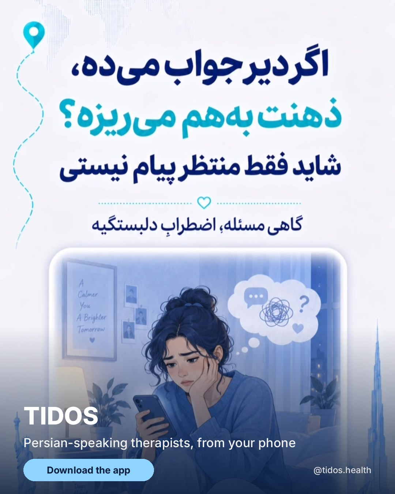
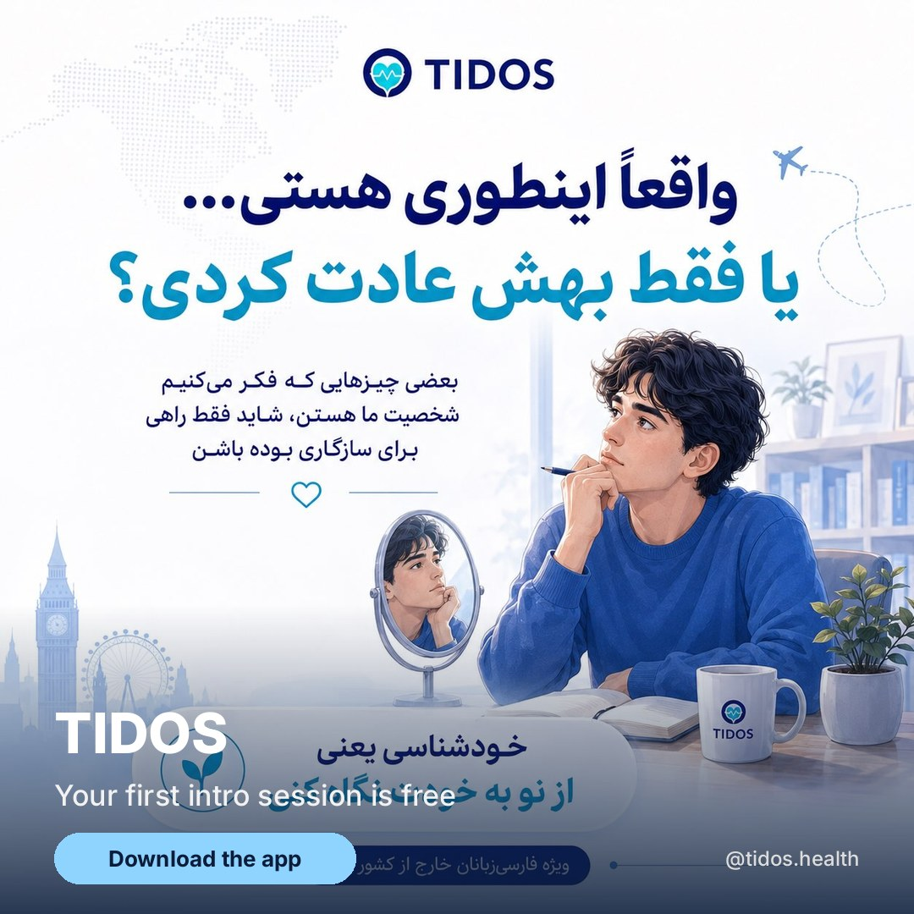
From their Instagram
@tidos.health speaks to the diaspora in its own words, one feeling at a time. The ads keep that voice.
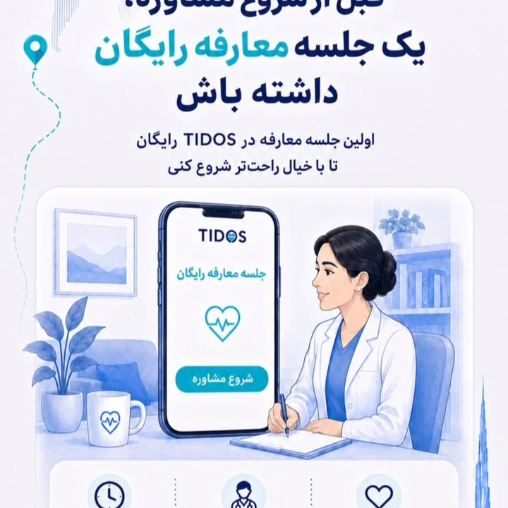
The free intro sessionStart with no pressure
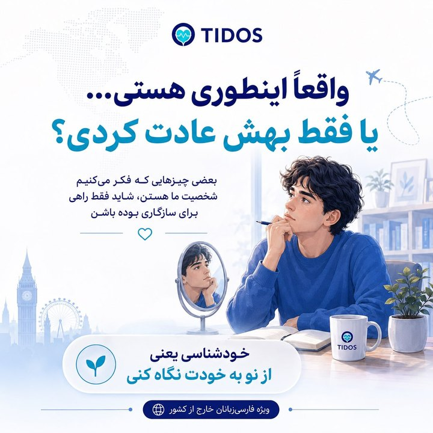
Is this really you?Self-knowledge, in Farsi
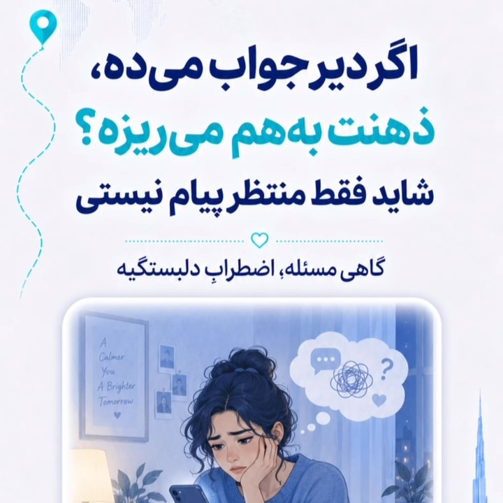
Waiting for the replyAnxious attachment, explained
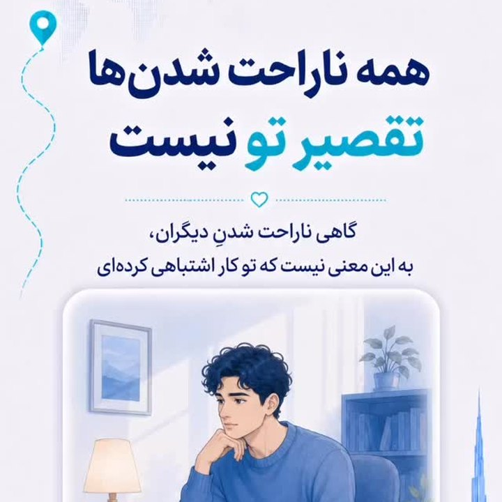
You can say noBoundaries and kindness
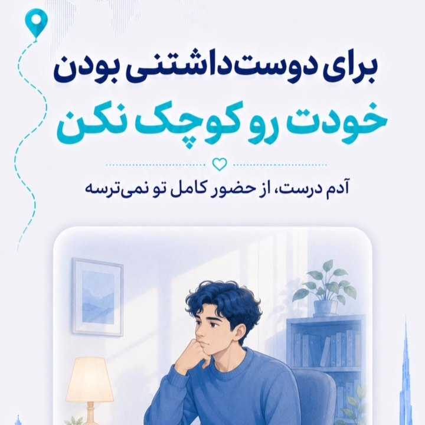
You do not have to shrinkBeing loved as you are
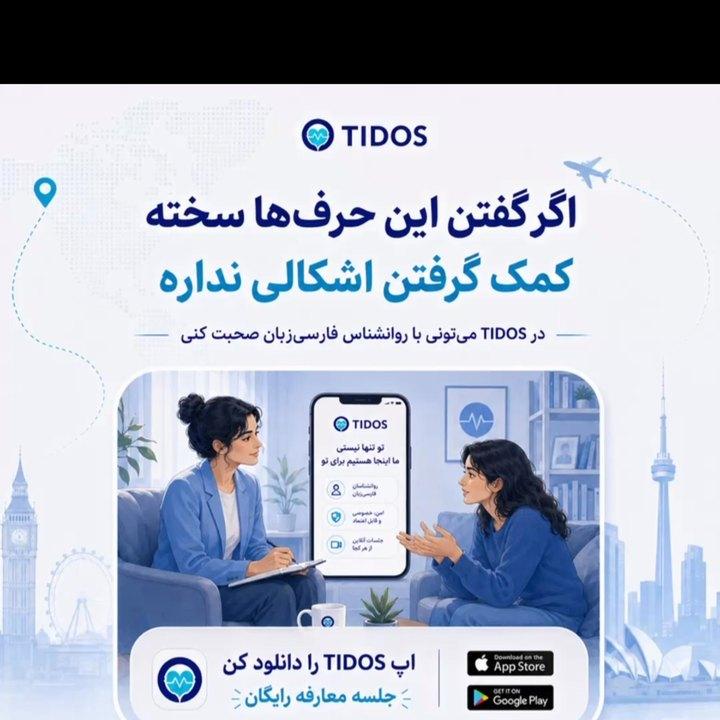
Depression, said simplyFor the people around you
Growth services for TIDOS.
Canada and the US, or the whole diaspora: pick the size that fits the plan. Prices in US dollars. We make the ads and run them; you approve and watch the numbers.
Launch · one country
$4,800 / month
Canada or the US, up to three cities
Audio between the songs, Full Screen, Home Feed
Creatives made for you, refreshed monthly
Meta ads managed for you, $1,000 a month included
A monthly read: plays, taps, installs, intro sessions
Gina on WhatsApp, one change a week
RECOMMENDED
Growth · Canada + US
$12,000 / month
both countries, eight cities, optimised weekly
Everything in Launch, in Toronto, Vancouver, Montreal, Los Angeles, Washington, New York, Texas and one city of your choice
Meta ads managed for you, $3,000 a month included
A landing page for RJ traffic with the free intro session
Weekly numbers, a monthly call with Gina, a quarterly plan
The plan we would start with
Scale · the global diaspora
$18,000 / month
North America plus the UK, Europe, the UAE and Australia
Everything in Growth, in every market on this page
Meta ads managed for you, $5,000 a month included
A second audio ad and a second creative set each quarter
RJ Events presence in one city a quarter (see Additional options)
For the year TIDOS goes global
Terms: plans are paid three months upfront. Prefer month by month? A one-time $250 set-up fee covers the work already done for you. Prices include our management fee; the ad budget inside each plan is what runs on Radio Javan, and the Meta budget is managed at cost plus 20%.
Prefer to run it yourself? Your Ads Manager account is open and the creatives on this page are yours to use. Open Ads Manager.
Four more ways we can carry TIDOS, on top of any plan or on their own.
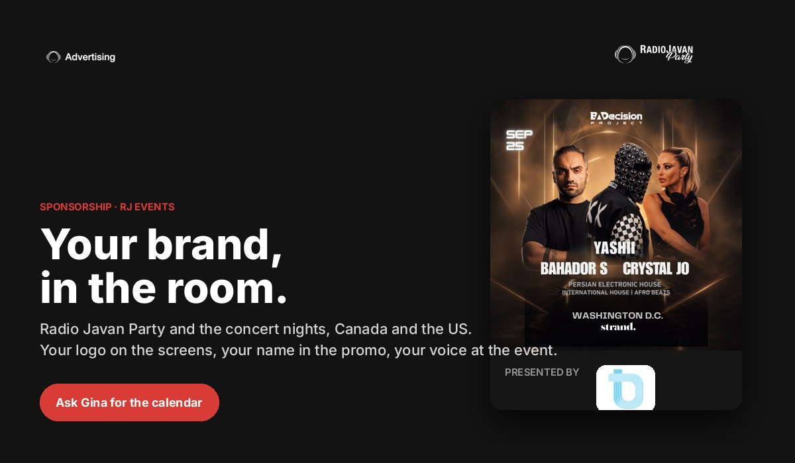
Radio Javan Party and the concert nights. Toronto, Vancouver, Montreal, Washington DC, Houston, Los Angeles and more, through the year. Persian speakers in the room, phones out, the same people who listen on the app.
Partner: your logo on the venue screens all night, your audio ad in the pre-event campaign, your name on the night's Instagram posts.
Presenting Partner: "presented by TIDOS" on every promo piece, a stage mention, a table or booth for a free intro-session sign-up, and the post-event thank-you to ticket holders.
City Series: three nights in one city, one price.
Priced per event and per city; Gina has the calendar and the next Toronto and DC dates.
Instagram and Facebook campaigns to Persian speakers by city, in Farsi and English, retargeting the people who heard the audio ad or visited the landing page.
Included in every plan above; on its own, managed at cost plus 20%, minimum $1,000 a month of media.
Creatives from this page, cut to Reels, Stories and feed.
A Farsi and English landing page for RJ traffic: the free intro session, three clinician profiles, a WhatsApp button, app-store links, one form.
App-store listing copy in Farsi, screenshots in the RJ style.
Built in a week, hosted by us or on tidos.health, tracked end to end so the monthly read shows installs and intro sessions, not just taps.
Days 1 to 30: audio, Full Screen and Home Feed live in Toronto, Vancouver, Montreal, Los Angeles, Washington and New York; Meta retargeting on; the landing page live. Read: plays, taps, installs, intro sessions per city.
Days 31 to 60: double the budget where intro sessions are cheapest, refresh the creatives, add Texas and the second Canadian tier of cities, first RJ Events presence.
Days 61 to 90: a second audio ad (a clinician's voice), a referral offer for existing patients, the UK switched on as a test, and a quarterly plan for the year.
Gina runs this with you and reports every week; nothing goes live without your approval.